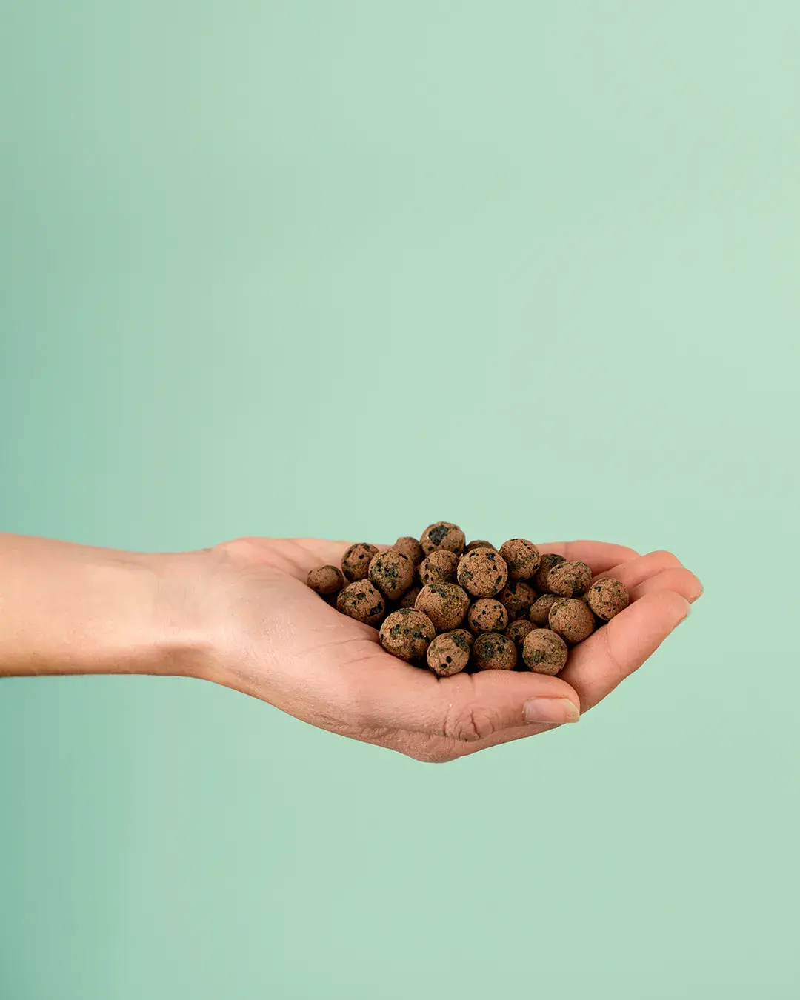
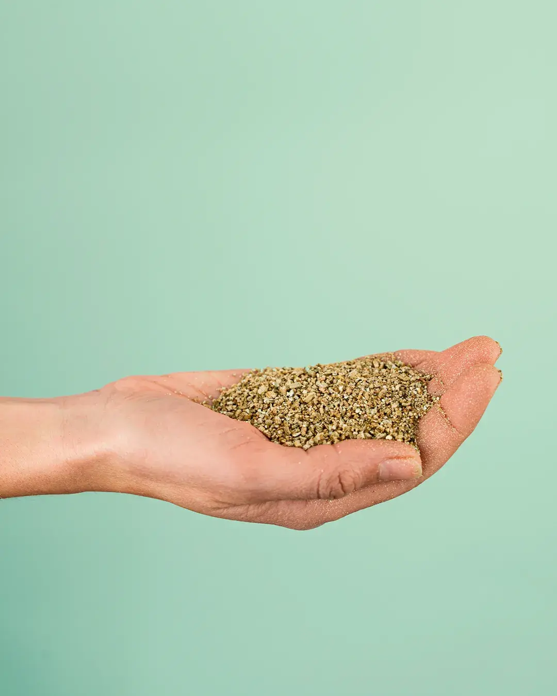
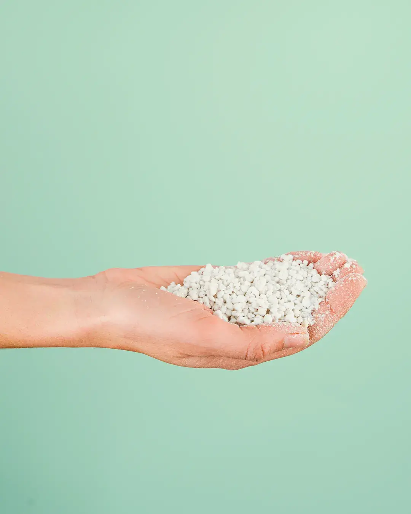
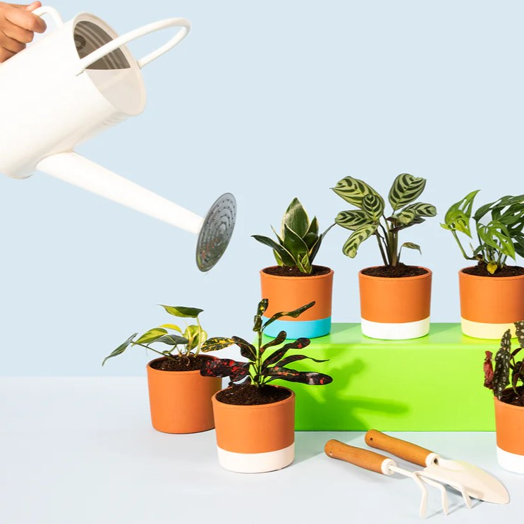
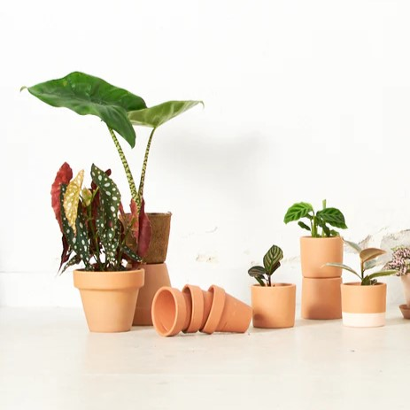
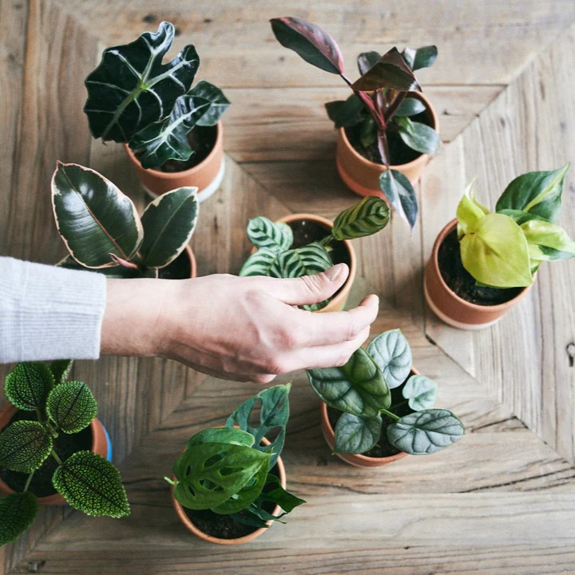

El sustrato es la base, la tierra que contiene a las plantas y la que las alimenta. El suelo es el medio en el que la planta va a desarrollarse, a fijarse y donde se extenderán sus raíces. ¡De ahí su importancia!
Una mezcla de materiales orgánicos e inorgánicos que garantizan un perfecto hogar en el que crecer feliz.

Arlita
Estas bolitas, también conocidas como arcilla expandida, favorecen el drenaje y evitan el encharcamiento. También aligeran el peso de la maceta y facilitan el trasplante, ya que, al ocupar estas piedras el fondo, el viejo sustrato se desprende mejor del contenedor. Evita que se pudran las raíces con la acumulación de agua en la base.

Vermiculita
Vermiculita es un mineral de la familia de la piedra mica, por eso brilla. Está compuesta por silicatos de aluminio, magnesio y hierro y tiene forma laminar. Es capaz de retener agua y nutrientes, aunque no tanto como la perlita, y permite que el sustrato se mantenga suelto y no apelmazado. También se utiliza para la germinación de semillas. Uno de los mejores complementos para dar una mayor porosidad y ayudar al drenaje de plantas. Perfecto para hidropónicos.

Perlita
La perlita es un mineral de origen volcánico que se esteriliza a más de mil grados y así se genera una especie de palomitas. Se trata de un material super liviano, aireado y muy poroso. Su principal virtud es que absorbe veinte veces su peso en agua. Al regar, cada grano de perlita aumenta su tamaño (se llena de agua) y va liberándola poco a poco hasta regresar a su forma original. De esa manera mantiene aireado el sustrato.
Dales
Lo Mejor!
Y no te olvides
Por último te dejamos otros cuidados esenciales para que todo esté verde

Drenaje
El drenaje es el sistema que se utiliza en jardinería para que filtrar o retirar el agua sobrante tras el riego, de modo que no se quede en la planta un exceso de agua o encharcamiento que pueda dañar las raíces e influir en la salud y aspecto de la planta.

Macetas
Las macetas de autorriego, también conocidas como macetas hidrojardineras, riegan las plantas por sí mismas, ya que disponen de un depósito de almacenamiento de agua que debemos rellenar previamente.

Abonos
Las plantas requieren una serie de nutrientes para desarrollarse bien, florecer en cantidad y con calidad, dar buenos frutos y resistir sequías y heladas. El sustrato necesita ser enriquecido de forma regular mediante el aporte de fertilizantes.
¿Tienes alguna pregunta?
También puedes contactarnos si deseas que añadamos alguna plantita a nuestra base de datos
Monstera deliciosa
O también conocida como "Costilla de Adán"
La costilla de adán es una de las plantas de interior más populares y deseadas por su fácil cuidado, poca exigencia y espectacular belleza.
Estas plantas trepadoras son de origen tropical y en terracota se cuidan estupendamente. Al principio, sus hojas acorazonadas carecen de fenestraciones foliares (sus características perforaciones) pero al alcanzar la madurez pueden llegar a medir más de un metro.
Dato curioso: esta monstera se la reconoce como "deliciosa" ya que su fruto es muy sabroso que oscila entre la piña y el mango. Eso sí, cuidado con comerlo antes de madurar o su fruto podría ser tóxico.
Familia:
Araceae
Dificultad de cuidado:
Fácil
Begonia maculata
Bambú o tamaya
Es una de las plantas de interior que enamoran con un simple vistazo. Y no es para menos: la begonia maculata es un auténtico espectáculo natural. Una planta que reúne aspectos sumamente interesantes para quienes quieran decorar con plantas. Por un lado, tiene ese punto exótico perfecto para poner personalidad a cualquier espacio.
Familia:
Begoniaceae
Dificultad de cuidado:
Media
Monstera Adansonii
Monkey Monstera
La Monstera adansonii es una planta trepadora perteneciente a la familia Araceae y nativa de las selvas de América Central.
Es una planta de interior muy decorativa gracias a los originales agujeros o fenestraciones, como se llaman de forma técnica, de sus hojas. Estos se asemejan a los agujeros que dejan los caracoles cuando se comen las hojas.
Se le conoce también como planta de queso suizo o planta de cinco agujeros y es la hermana pequeña de una de las plantas de interior más deseadas: la Costilla de Adán o Monstera deliciosa.
Familia:
Araceae
Dificultad de cuidado:
Fácil
Calathea Makoyanae
Goeppertia makoyana
Solo hay que ver la forma y la tonalidad de las hojas para saber relacionar el nombre común atribuido a esta planta, planta de pavo real. Científicamente se conoce como Calathea makoyana o Goeppertia makoyana, una calathea fantástica para cultivar como planta de interior en espacios bien iluminados.
Su pequeño tamaño y el atractivo de sus hojas hace que sean muchos cultivadores y amantes de la jardinería los que la buscan. De hecho, ganó el premio al mérito del jardín de la Royal Horticultural Society.
Familia:
Marantaceae
Dificultad de cuidado:
Media-Fácil
Anthurium Clarinervium
Anturio cristalino
Seguramente este sea el anthurium más deseado y difícil de encontrar. Esta increíble joya tropical se cultiva por sus espectaculares hojas de nervaduras marcadas en forma de corazón. De la familia de las araceae como las monsteras, es originaria de México donde crece como planta epífita, lo cual significa que en la naturaleza crece sobre la corteza y copas de los árboles sin parasitarlos.
Puede crecer feliz en sustratos para orquídeas ricos en arlita y perlita. Requiere espacios muy luminosos pero con iluminación indirecta ¡nada de sol! y temperaturas superiores a 18ºC.
Familia:
Araceae
Dificultad de cuidado:
Media
Calathea Orbifolia
Verde para siempre
Esta planta pertenece al género Calathea, familia Marantaceae, y es originaria de bosques tropicales de Bolivia y este de Brasil. La Calathea Orbifolia tiene un crecimiento moderado en cultivo interior, aunque esto siempre dependerá del tipo de suelo empleado, la iluminación, temperatura y demás cuidados que la planta reciba. Con el tiempo puede llegar a alcanzar hasta 60 cm de altura y sus hojas llegar a medir entre los 15 – 30 cm de ancho.
Familia:
Marantaceae
Dificultad de cuidado:
Media-fácil
Maranta Leuconera
Planta de la oración
La Maranta Leuconeura o Fascinator, es una planta perenne y también es conocida como planta de la oración ya que sus hojas de cierran levemente por las noches. Sus hojas poseen nervios de color rojo que contrastan con diferentes tonalidades de verdes
Familia:
Marantaceae
Dificultad de cuidado:
Fácil
Syngonium Pink Heart
Syngonio Neon Robusta
Los syngoniums son muy solicitados para la decoración de interiores y sus versiones “mini” se utilizan mucho en los terrarios. El Angustatum tiene unas hojas estrechas y puntiagudas muy elegantes. A medida que las hojas maduran, pasan de tener forma de flecha a 5 lóbulos, que representan los 5 elementos del Feng Shui. No es sólo una planta decorativa, sino que también es capaz de purificar la pequeña capa de aire que la rodea. El ‘Neon’ tiene un tono rosa clarito.
Familia:
Araceae
Dificultad de cuidado:
Moderado-dificil
Philodendron Micans
Philodendron hederaceum
El Philodendron Micans, es una planta trepadora de hojas aterciopeladas en forma de corazón. Sus hojas brillantes combinan profundas tonalidades verdes y rojizas que varían en función de la luz que reciba. Al igual que en el caso del Potos, los cuidados del Philodendron Micans son muy sencillos, por lo que también es una fantástica opción para principiantes.